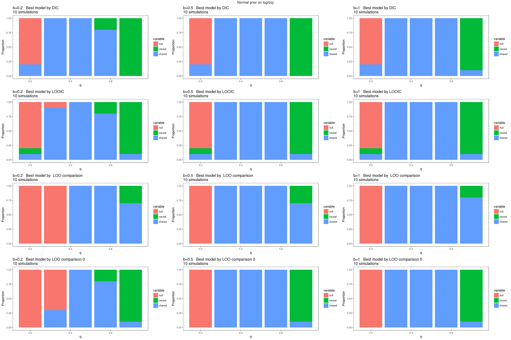
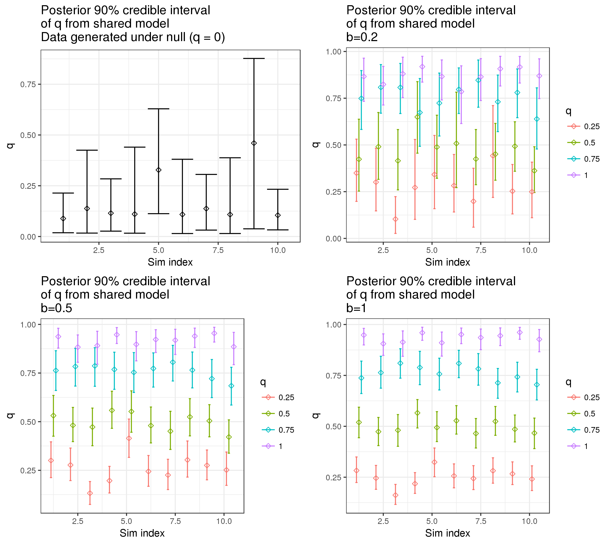

Testing using MH/LOO for model selection
Jean Morrison
July 20, 2017
Introduction
I am exploring different methods of model selection for the sherlock problem. We are attempting to distinguish between null, causal, and partial sharing models. Previously I have used BIC but that probably isn’t the best strategy. In particular, it is only based on the ML (or MAP) estimates and the corresponding likelihood.
Here I am looking at trying to sample from the posterior distribution of the parameters in order to get more Bayesian measures of model fit. I am using the R package MHadaptive to run an adaptive Metropolis-Hastings algorithm. I first attempted to use STAN but found that sampling was prohibitively slow due to slow evaluation of the likelihood. Since I have already implemented an efficient calculation of the likelihood in C++ (call-able from R), I found it was much more efficient to use the R package for sampling. So far I haven’t figured out if there is a way to get STAN to use my C++ code.
There are currently two limitations of this method:
- Mixing proportions for SNP effect sizes must be fixed. This is because the mixing proportions lie on a simplex and
MHadaptivecan’t really sample from a simplex (that I have found, so far). There might be a work-around for this in the future. In this document, I conduct some experiments in which the mixing proportions are known. In the future I will see how performance is using fixed but estimated proportions. - The models I am currently comparing only allow effects in one direction. It probably is not too hard to allow effects in both directions. For simplicity, for now I am only using one direction.
Models
One graphical representation of the model we are considering is here:
There are \(p\) SNPs, each of which can act on trait 1, trait 2, or both. The distribution of effect sizes of SNPs on the two traits for now is assumed known (see limitation 1 above). Of the SNPs acting on trait 1, a proportion \(1-q\) between 0 and 1 act directly on trait 1 without contributing to trait 2, while the remainng \(q\) act through a shared factor that also acts on trait 2 with effect size \(b\).
The null model, in which the two traits are not related at all, is represented by \(q=0\) and \(b=0\). It is worth noting that if either \(q\) or \(b\) is equal to 0, the other parameter is not identifiable or meaningful. The causal model is represented by \(q = 1\) and \(b \neq 0\). Partial sharing is indicated by other values of the parameters.
Since we observe summary statistics rather than true effects, we include an additional parameter \(\rho\) in all models to capture correlation in the noise of the parameter estimates between the two traits. This parameter is disucssed further here.
Likelihood
Let \(\hat{\beta}_{ij}\) be the estimated effect size of SNP \(j\) on trait \(i\) and \(s_{ij}\) be the corresponding standard error. Assuming no measuement error in the estimation of \(s_{ij}\), the likelihood of the observed pair of estimates \((\hat{\beta}_{1j}, \hat{\beta}_{2j})\) is
\[ P\left( \begin{pmatrix}\hat{\beta}_{1j}\\ \hat{\beta}_{2j}\end{pmatrix}; \rho, b, q, s_{1j}, s_{2j} \right) = q\left\lbrace \sum_{k=1}^{K} \pi_k N\left(\begin{pmatrix}\hat{\beta}_{1j}\\ \hat{\beta}_{2j}\end{pmatrix}; \begin{pmatrix}0\\0\end{pmatrix}, A(0, b)U_k A(0, b)^{T} + S(\rho, s_{1j}, s_{2j}) \right)\right \rbrace +\\ (1-q)\left \lbrace \sum_{k=1}^{K} \pi_kN\left(\begin{pmatrix}\hat{\beta}_{1j}\\ \hat{\beta}_{2j}\end{pmatrix}; \begin{pmatrix}0\\0\end{pmatrix}, U_k + S(\rho, s_{1j}, s_{2j}) \right)\right\rbrace \] Where \(U_k\) and \(\pi_k\) are known variance matrices and mixing componenets for the SNP effects,
\[ A(a, b) = \begin{pmatrix} 1 & a \\ b & 1\end{pmatrix} \] and \[ S(\rho, s_{1j}, s_{2j}) = \begin{pmatrix} s_{1j}^2 & \rho s_{1j}s_{2j}\\ \rho s_{1j}s_{2j} & s_{2j}^2 \end{pmatrix} \]
We can then write \[ L(\rho, b, q) = \prod_{j=1}^{p} P\left( \begin{pmatrix}\hat{\beta}_{1j}\\ \hat{\beta}_{2j}\end{pmatrix}; \rho, b, q, s_{1j}, s_{2j} \right)^{w_j} \] where \(w_j\) are weights that account for LD.
Priors
In order to ensure identifiability, the prior on \(b\) should have no or very little mass at zero. In this document, I will use the non-local normal moment prior propsed by Johnson and Rossell (2010). For this problem, we assume that we have a good idea of which direction any possible causal effect will go and that effect size estimates are scaled so that it is likely that \(\vert b \vert < 1\). The prior \[ \pi_b(b) = \frac{b^2}{0.4^2}N(b; 0, 0.4) \] has the following shape:
f <- function(t, sigma){
(t/sigma)^2*dnorm(t, 0, sigma)}
curve(f(x, 0.4), from=-4, to=4)This prior places 90% of its mass between -1 and 1 and 33% of its mass between -0.5 and 0.5. In ohter cases, it may be necessary to change the scale parameter of the normal moment prior.
We place a mildly informative prior on \(z = \text{arctanh}(\rho)\) with a mode at zero. We use \[ \pi_z(z) = N(z; 0, 0.5)\]
I considered three different priors for \(q\): a non-local prior that has most of its mass away from 0 and 1 which correspond to the null and causal models respectively, a flat prior, and a prior that places most of its mass on small values (the Beta\((1, 3)\) distribution which has 87.5% of its mass less than 0.5). I was only able to run the sampler using the non-local prior due to computational issues finding the gradient of the likelihood.
For simplicity, the priors for the three parameters are independent.
Experiments
We start with a set of experiments that should be easy: On average, there are 500 SNPs effecting trait 1 with effect size distributed \(N(0, 0.15)\). There are on average 1000 SNPs effecting trait 2 with effect size for direct acting SNPs distributed \(N(0, 0.05)\). This gives an average heritability of about 72% for trait 1 and 37% for trait 2. There are 10,000 SNPs total.
Below I will present results in each of 15 settings with \(q\) taking on values 0, 0.25, 0.5, 0.75, and 1 and \(b\) taking on values 0.2, 0.5, and 1. The settings with \(q=0\) (\(b\) is irrelevent for these) are equivalent to the null model while \(q=1\) is equivalent to the causal model.
Model comparison results
Here I consider three methods of comparing models
DIC (Deviance information criterion). This is relatively easy to compute. For each sample, \(\theta^s\) of parameters from the posterior, we must calculated \(p(\text{data} | \theta^s)\). Lower values of DIC indicate a better fit. Below I present results in which we simply select the model with the lowest DIC.
LOOIC. This is the information criterion based on leave-one-out cross validation (LOO). It can be calculated using the
loopackage in R but is fairly computationally intensive. In order to make this computation we need to calculate \(p(\text{data}_n \vert \theta^s)\) for every sample from the posterior, for every SNP. With many SNPs, this will prove impossible. The LOOIC can also be calculated using a random subsample of SNPs. I will need to explore this possibility further however because most of the information about which model is best will be contained in a small subset of SNPs. This means that a random sample could be unreliable. Below I show results in which the model with the lowest LOOIC value is selected.Comparison of LOO values. This model selection method uses the LOO results but takes advantage of the fact that some confidence can be assigned to the difference in elpd (which is the quantity estimated by LOO) between two models. Below I use the following rules:
- Model A is considered ``better’’ than model B if \(\widehat{\Delta elpd}_{AB}/se(\widehat{\Delta elpd}_{AB}) > 1.93\) (that is - with good confidence we can say that the elpd for model A is higher than the elpd for model B).
- If neither the causal model nor the shared model is better than the null model, we choose the null model. Note that either of the non-null models may have a slightly larger elpd (or lower LOOIC) than the null model but not meet the criterion above to be considered ``better’’.
- If one or both of the non-null models is better than the null model, we compare the shared and causal model. If the causal model is better, we choose it. Otherwise we choose the shared model.
Note that this system makes it harder to choose the non-null models over the null model and harder to choose the causal model over the shared model.
Before running these experiments, I felt that method 3 would be the best, however, given the difficulty of calculating the elpd based on LOO, was hopeful that comparison based on DIC would yield similar results.
Model comparison results of the experiments are shown below. The value of \(b\) increases reading across collumns (left: 0.2, middle: 0.5, right: 1). In each plot, the \(x\)-axis is \(q\) and the \(y\) axis is the proportion of simulations assigned to each model. Rows of plots correspond to different model selection procedures (top: DIC, middle: LOOIC, bottom: LOO comparison) :

Based on these results, the LOO comparison method does apear to be the best model selection method (third row of plots). It always chooses the null model when \(q=0\) and usually chooses the shared model when \(q = 0.25\), 0.5 or 0.75. However, disturbingly, there are several false slobielections of the causal model when \(b=1\) and \(q\) is small and the power to choose the causal model when \(q=1\) is low. Since these data have fairly strong signal, we would hope for better performance. Additionally, we should have better power for larger values of \(b\) which we don’t observe. To explore these quesitons, I looked more closely at the poseterior samples.
Trace plots
For each of the 150 simulated data sets described above and for each model, I ran three chains of length 3000, discarding the frist 1000 samples and then thinning by taking avery fifth sample. The starting point for each chain is sampled randomly from the prior. I examined trace plots for each simulation, checking for good mixing of the three chains and that the chains appeared to have reached a stationary distribution. In many cases, the MH algorithm appeared to have converged correctly in all chains. However, in some cases, it appears that the likelihood in the shared model is bimodal and that many of our false postives are these cases.
For example, in the setting \(q=0.5\) and \(b=1\), there are four simulations for which the causal model seems to fit better than the shared model. Here is the trace plot for one of these simulations:
The first row of plots shows posterior samples of \(z = \text{tanh}(\rho)\) from the null model. The second row shows samples of \(z\) and \(b\) from the causal model. The third row shows samples of \(z\), \(b\), and \(\text{logit}(q)\) from the shared model. In the null and causal models, all three chains seem to be sampling from the same distribution. In the shared model, two chains draw valuse of \(b\) and \(q\) close to the true values, while chain 3 is sampling values of \(b\) around -2.8 and values of \(q\) close to 0.08.
Looking more closely at the data for this simulation, we see that there is a very clear trend in the pairs of z-scores but, looking at the log-likelihood for the sharing model, there is a local mode close to \(b=-3\) and \(\text{logit}(q) = -2.4\).
One possible solution to this problem might be to always start chains close to the MAP estimate rather than at random locations sampled from the prior.
Results always starting chains at MAP
If we always start the chains at the MAP, we get the following model classification results (rows and columns and axes of this plot are the same as the equivalent plot above):

Using the LOO Compare method, we have eliminated all false postives! However, we still have low power to choose the causal model when \(q=1\). Given that the causal model always has the lowest LOOIC in these settings, we may be being too conservative. It is possible for the shared model to be very similar to the causal model by estimating \(q\) to be large. We could consider a model selection scheme in which we choose the causal model if it is better than the shared model or if the two models have similar elpd and the shared model estimates \(q\) to be above a certain threshold.
The following plots show the posterior 90% credible intervals for \(q\) from the shared model. The first plot is for data generated with \(q = 0\) (i.e. under the null model). The other three plots are respectively for each value of \(b\). Colors indicate the value of \(q\). 
Here are the equivalent plots for the posterior distribution of \(b\) from the shared model.
This R Markdown site was created with workflowr